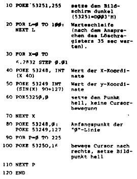

Nascom Journal |
5/80 |
Wenn alle CS-Signale aktiv sind, leuchtet die LED auf. Da dies nur sehr kurz der Fall ist, leuchtet sie nur bei häufiger Zugriff-/Zeiteinheit. Der prinzipielle Aufbau der Karte geht aus Abbildung 1 hervor.
b) Software
Bis jetzt wurden von den vier Speicherstellen (Registern) nur drei erwähnt, nämlich das x-Register auf D000’H, das y-Register auf D001 und das Befehlswort-register auf D002’H. Das vierte Register auf D003’H ist das sogenannte Lösch-Register; mit ihm können alle 64K Bildpunkte innerhalb von 35msec auf einen bestimmten Wert gesetzt werden. Tabelle zeigt die Helligkeitsbefehle. In der Grundversion ohne Erweiterungsschaltung kann der Bildschirm nur hell oder dunkel gesetzt werden. Wird also auf die Speicherstelle D003’H der Wert 00 geschrieben, werden alle Bildpunkte auf den größten Helligkeitswert gesetzt, der Wert FF’H würde den geringsten Helligkeitswert veranlassen. Ohne die Erweiterungsschaltung sind die Bits 1-3 ohne Bedeutung, ebenso die Bits 4-7. Diese Bits spielen nur beim Setzen eines Bildpunktes eine Rolle. Nachdem dem X- und y-Register die aktuelle Adresse mitgeteilt worden ist, wird das Befehlsregister angesprochen. Das obere Halbwort des Befehlswortes veranlaßt erst eine Cursorbewegung (siehe Tabelle 1); danach wird der Bildpunkt gemäß dem unteren Halbwort in der bestimmten Helligkeit gesetzt (siehe Tabelle 1). Zur Erleuterung ein Beispiel: D000’H wird mit 64’H (=100’D), D001’H mit A’H (=10’D) und D002’H mit E0’H geladen. So wird der Punkt mit der X-Koordinate 101’D (100 aus dem X-Register und die Cursorbewegung nach oben) und der Y-Koordinate 10’D auf die größte Helligkeit gesetzt. Zu bemerken ist noch, daß der Punkt mit den Koordinaten (0,0) links unten, der Punkt mit den Koordinaten (FF’H,FF’H) rechts oben liegt.
Zuletzt möchte ich noch ein Programm zum Zeichnen einer Sinuslinie vorstellen:
Mittlerweile sind ein paar Utility -Programme entwickelt worden, z.B. zum Zeichnen von Koordinatensystemen. Fertig ist auch ein Programm, mit dem man in die Graphik schreiben kann. Damit ist es möglich, Buchstaben an bestimmte Stellen zu setzen, wie auch Graphik als zweites Bildschirmterminal zu benutzen. Die Textdarstellung erfolgt In 24 Zellen à 31 Buchstaben. Das Programm besitzt automatischen Zellenvorschub und Seltenwechsel, läuft auf T2, T4 und NAS-SYS, bei letzterem kann z.B. über das „U“ -Kommando der Computerbetrieb auf zwei Bildschirmen gleichzeitig erfolgen. In wenigen Wochen wird‚Schachgraphik‘verfügbar sein, zusammen mit dem MKS-Superschach ist die Schachbrettdarstellung auf dem Graphikinterface möglich. Bei diesem Programm besteht jede Schachfigur aus 144 (!) Punkten.
Das gesamte Graphiksystem wird bald bei MKS verfügbar sein. Es besteht aus einer Grundplatte mit der Interfaceschaltung, sowie zwei Steckplatzen für Graphik 1 und die Erweiterungsplatine.
Albert Schunck, ____________ _
____ München __
| Seite 10 von 16 |
|---|